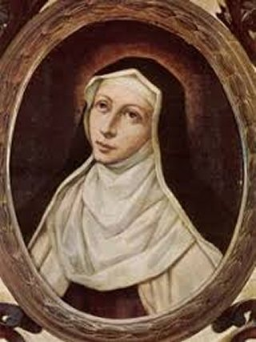
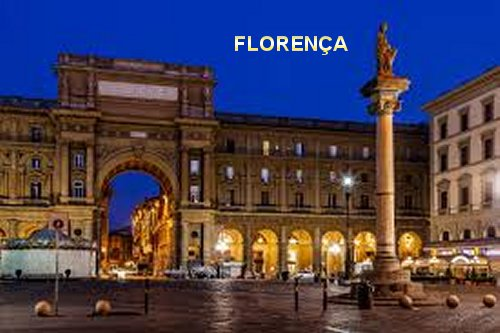
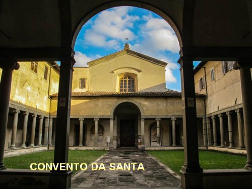
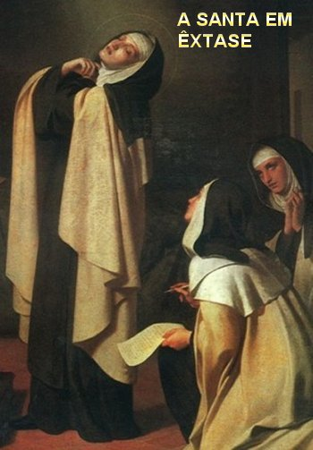

Embora tivesse
grande força de vontade e um temperamento forte, incisivo e ardoroso, era
obediente e nunca faltou ao devido respeito aos seus pais, assim como aos
superiores e professores no Colégio, no Convento e ao longo da existência.
Embora tivesse
grande força de vontade e um temperamento forte, incisivo e ardoroso, era
obediente e nunca faltou ao devido respeito aos seus pais, assim como aos
superiores e professores no Colégio, no Convento e ao longo da existência.
“ESTUDO E CARIDADE”
A FAMÍLIA 
Santa Maria Madalena era filha de uma das mais nobres e proeminentes famílias de Florença, na Itália; sua mãe era a senhora Maria Buondelmonti e seu pai, o senhor Camillo di Geri de Pazzi. Ela nasceu no dia 02 de abril de 1566, e no dia seguinte, 3 de abril foi Batizada no Oratório de São João Batista, recebendo o nome de Catarina de Pazzi (mas em casa, era chamada de Lucrezia em homenagem a sua avó paterna: Lucrezia Mannuci). A menina foi à segunda filha do casal, que tiveram mais duas crianças permanecendo com quatro filhos:: Geri, Catarina, Alamanno e Braccio.
Desde a infância, Catarina deu mostras de ser uma alma eleita, pois encontrava o maior prazer no silêncio, na oração e nas práticas de piedade. Ela não gostava daquelas brincadeiras que são normais as crianças da sua idade. Desde muito jovem, levava uma vida de piedade e oração. Por essa razão, os pais que possuíam excelente posição social e a tratavam com muito carinho, sempre estavam desejosos de conseguir os melhores ensinamentos para a filha, e assim, conseguiram com a Ordem Jesuíta, dois sacerdotes que nos horários determinados, funcionaram: um como diretor e o outro como confessor espiritual; era o Padre Pietro Rossi e o Padre Blanca, que lhe ensinaram orações e a instruíram na fé cristã.
Além das muitas qualidades excepcionais que possuía, Catarina se preocupava e se interessava em catequizar as crianças pobres, justamente naqueles momentos em que escolhia para descansar. Na verdade ela repousava de maneira diferente; sem preguiça e com disposição chamava as crianças da redondeza: meninos e meninas filhos dos camponeses, e pacientemente com bastante carinho, lhes ensinava orações e às vezes fazia uma pequena catequese sobre JESUS e NOSSA SENHORA, passando para as crianças o que aprendia com os sacerdotes.
No dia 25 de fevereiro de 1574 entrou no Mosteiro de “San Giovannino dei Cavalieri”, onde sua educação foi supervisionada por sua tia materna, Irmã Lessandra Buondelmonti. Na verdade ela esteve neste Mosteiro por duas vezes: de 1574 a 1578 e depois, de 1580 a 1581.
O PERFUME DE JESUS
Embora tivesse
grande força de vontade e um temperamento forte, incisivo e ardoroso, era
obediente e nunca faltou ao devido respeito aos seus pais, assim como aos
superiores e professores no Colégio, no Convento e ao longo da existência.
Entretanto, ainda criança, mesmo antes de completar a idade requerida naqueles tempos para receber a SAGRADA EUCARISTIA, ela já nutria excepcional devoção ao SANTÍSSIMO SACRAMENTO. E seu amor pela EUCARISTIA era tão fervoroso, que ela se manifestava com plena convicção, com palavras simples, mas claras e cheias de vida, revelando o seu imenso amor a JESUS. Sua mãe observava, mas no silencio do seu coração permanecia uma pequena nuvem de incerteza, por causa da pouca idade da filha. Por isso, decidiu observar com maior cuidado as atitudes dela.
Certo dia a mãe ficou verdadeiramente intrigada com uma insistente atitude da sua menina, e então a interrogou, a fim de saber qual o motivo por que ela passava dias inteiros ao seu lado, estivesse na cozinha, na sala ou no quarto? A filha respeitosamente e com muita delicadeza falou: “Mãe, é porque nos dias em que a senhora recebe a SAGRADA COMUNHÃO na Santa Missa, eu sinto na senhora o perfume de JESUS!”.
A mãe admirada abraçou a filha, e decidiu interceder em favor de Catarina na Igreja, descrevendo ao Sacerdote Confessor o admirável procedimento da menina. O Padre considerando o fervor e o interesse de Catarina abriu uma exceção, concedeu-lhe fazer a Primeira Comunhão no dia 25 de março de 1576, quando tinha apenas 10 anos de idade. A felicidade da menina não conheceu limites, e disse com muita alegria: “Mãe querida vou viver um CÉU ainda estando aqui na Terra”. E na continuidade, manifestou um vivo interesse em conhecer as Sagradas Escrituras, para melhor e mais fervorosamente amar JESUS. O Sacerdote admirado com aquelas atitudes e manifestações da menina lhe concedeu autorização de comungar todos os domingos.
ADEUS AO MUNDO
Três semanas após a sua Primeira EUCARISTIA, na Quinta-Feira Santa, estando recolhida durante a ação de graças, Catarina sentiu-se movida pelo Amor Divino a fazer uma promessa a DEUS, de assumir um procedimento mais santo, como forma de agradá-LO muito mais e em tudo. E assim, com decisão e serenidade “fez o voto de castidade perpétua”, voltando definitivamente às costas aos prazeres, aos oferecimentos e alegrias do mundo, pois estava decidida a viver somente para DEUS definitivamente, em toda a sua existência.
SEUS PAIS TINHAM OUTRO PLANO
Todavia os seus progenitores não
pensavam do mesmo modo, aguardavam que a filha alcançasse os 16 anos de idade,
para manifestarem o desejo que ela contraísse 
Entretanto sua mãe, não gostou do desfecho da conversa e com suas próprias convicções não se rendeu, permaneceu em silêncio, oferecendo interiormente, uma viva resistência fundamentada nos seus pensamentos. E assim, a senhora Maria Buondelmonti tratou de empregar todos os meios ao seu alcance para desviar a filha da vocação religiosa. Imaginava, nos seus cuidados de mãe, ser uma fantasia própria da idade, que por certo, logo com pouco tempo depois, mais amadurecida pelos acontecimentos da vida, ela ia se esquecer ou abandonar aquele projeto, acolhendo um futuro promissor emanado do prestigio e valor de seus pais, que iria lhe proporcionar imensa felicidade.
Mas Catarina permaneceu firme e imutável na sua decisão, e nem de leve pensava abandonar o seu propósito, ao contrário, fez com que ele crescesse muito mais em seu coração, pela dor da espera e pela difícil prova que sua mãe lhe submetia. Tanto insistiu, que seus pais a colocaram num Convento para não interromper os estudos.
CONVENTO FRANCISCANO
No Convento Franciscano em Cortona ela continuou os seus estudos, onde também, teve a felicidade de conhecer e se emocionar com a espiritualidade de São Francisco de Assis, que mais tarde, em seus escritos, descreve como sendo o seu "pai espiritual", enquanto considerava Santa Clara como sua "advogada". Mas seus pais, opondo-se à sua vocação religiosa, logo a removeram do Mosteiro, com o objetivo de lhe arranjar um casamento.
O TEMPO PASSOU
Catarina ficou triste, mas obedeceu, e continuou com os estudos em casa. Mas, não acolheu a idéia de casamento. Depois de alguns meses de minuciosas observações, a Senhora de Pazzi percebeu a admirável segurança do comportamento da filha. Recordou o tempo quando ela confessou que queria ser uma religiosa, e que desde então, ela vem se mantendo fiel ao seu ideal... Ficou impressionada. Por isso, sorrindo, decidiu acolher intimamente aquela maravilhosa fibra da filha, abandonando as suas idéias de casamento, colocando um definitivo fim no seu desejo de mãe, e firmando um concreto apoio a sua Catarina, para que ela realizasse o ideal da sua vida.
FINALMENTE AS CONSOLAÇÕES

Feitos os contatos necessários, preparado o seu pequeno enxoval, com 16 anos de idade foi conduzida ao Convento de Santa Maria dos Anjos pelos seus pais. De acordo com as Normas da Ordem, na Comunidade Religiosa passou 15 dias a titulo de Apresentação e Conhecimento. Foi aprovada e aceita em definitivo no dia 1º de Dezembro de 1582. Dois meses depois, recebeu o “hábito de Noviça” e mudou o seu nome de Catarina para “Maria Madalena”, porque tinha particular devoção por Santa Maria Madalena.
No Convento viveu durante 25 anos uma admirável aventura espiritual que resultou numa grandiosa obra com todas as suas experiências carismáticas. De um lado, DEUS NOSSO SENHOR lhe concedia um precioso tesouro de consolações, com as virtudes e os ensinamentos para torná-la uma fervorosa apóstola do SEU DIVINO e sagrado AMOR. E de outro lado, como uma natural consequência e reflexo do infinito AMOR DE DEUS, ela devia se oferecer também a participar dos sofrimentos da Cruel Paixão do SENHOR JESUS, oferecendo os seus sofrimentos pessoais, em reparação de toda maldade que imperava na sua época, em benefício da salvação dos pecadores.
Os dois primeiros anos em São Fridiano decorreram numa contínua e preciosa consolação. Sentia-se arrebatada ao contemplar o Amor de DEUS pela humanidade, e por outro lado, repleta de pesar, sentia o horror e a malícia do pecado, e a terrível ingratidão daqueles que o cometiam.
CHEGARAM OS ÊXTASES
E assim, os dias decorriam em plena naturalidade. Algum tempo depois, uma misteriosa doença dominou o seu corpo, obrigando-a permanecer cerca de três meses no leito, sem nenhuma condição de trabalho. E por essa razão, as Irmãs imaginando que não deviam esperar, em função da gravidade da doença, prepararam tudo e fizeram a sua profissão religiosa ali mesmo no leito, no dia 27 de maio de 1584.
Mas, pouco tempo depois ela ficou
curada e integrada a Comunidade Religiosa. Todavia, a partir desse dia, os
êxtases passaram a ser contínuos, sobretudo pela parte 
Em pleno êxtase ela exclamava: “Ó Amor, que não sois conhecido nem amado! Meu DEUS como és ofendido!”… Estas misteriosas e sublimes palavras ecoavam pelos muros do Mosteiro Carmelita, naquela tarde de inverno de 1584. Irmã Maria Madalena de Pazzi, uma noviça de 18 anos as pronunciava com os lábios trêmulos, o rosto inflamado e banhado em lágrimas.
Surpresas, as irmãs não sabiam o que pensar: conheciam a piedade da sua jovem companheira, mas nunca a tinham visto nesse estado de exaltação tão profunda, prestes a desmaiar. Tomaram-na nos braços, julgando-a acometida de súbita doença, e procuraram acalmá-la; mas, durante duas horas, ela parecia nada ver, nem ouvir, dominada tão somente por esta idéia: “DEUS é Amor, e não é amado!”
Assim que recuperou sua normalidade, na sequência dos dias, reunida com a Superiora e as suas companheiras da irmandade, naturalmente as mais próximas, descreveu os seus êxtases: “Eu via DEUS sozinho, maravilhoso, glorioso em SI Mesmo, Amando-se a SI Mesmo, conhecendo-SE intimamente e compreendendo-SE infinitamente; Amando as criaturas com um AMOR puro e infinito; e na União Única e Indivisível, Um Só DEUS subsistente, de Amor infinito, de Soberana bondade, Incompreensível, Imperscrutável”.
Durante a Quaresma do ano 1585, os fenômenos extraordinários cresceram a um incalculável auge de intensidade. No dia 25 de Março (Festa da Anunciação do SENHOR), apareceu-lhe Santo Agostinho, que utilizando um estilete misterioso gravou em seu peito as palavras “Et Verbum caro factum est” (E o VERBO se fez CARNE). Na segunda-feira da Semana Santa, recebeu os Sagrados Estigmas de CRISTO, mas não de forma visível. Somente ela via os Estigmas do SENHOR.
Na Quinta-Feira Santa, a Irmã Maria Madalena entrou num êxtase profundo que permaneceu durante vinte e seis horas. Ao longo de toda a Semana Santa, ela sentiu em si, fisicamente, as mesmas dores, as mesmas angústias, os mesmos tormentos de JESUS, evidentemente e compreensivelmente, numa intensidade humanamente suportável. As religiosas que puderam acompanhar a Irmã Maria Madalena e contemplá-la percorrendo as diversas dependências do Mosteiro, em pleno êxtase, descreveram depois; ora ela seguia o Divino Mestre em sua agonia, ora no julgamento diante de Pilatos, ora na dolorosa e terrível Coroação de Espinhos, as Irmãs estavam maravilhadas. Agora ouviam a descrição daquilo que puderam apreciar pelas manifestações dela. Como diziam: foi um momento encantador.
Depois de uma pequena pausa, Irmã Maria Madalena manifestou novo êxtase. Viram-na entrar carregando uma cruz nos ombros na sala do Capítulo, onde se estendeu no chão para ser pregada no madeiro. A seguir, depois de alguns minutos deitada, levantou-se e se recostou na parede e, de braços abertos, repetiu as sete últimas palavras de JESUS Crucificado. Todos permaneciam em profundo silêncio admirando o êxtase da Irmã.
Dias após, a Irmã Maria Madalena em êxtase assistiu à descida de CRISTO aos infernos, à sua Ressurreição e, finalmente, à sua gloriosa Ascensão aos Céus.